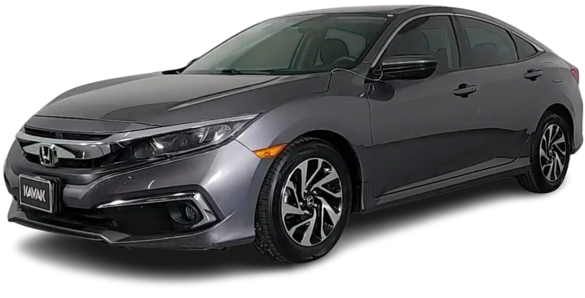

HONDA CIVIC
O Honda Civic é um dos carros compactos mais populares do mundo e tem sido uma parte significativa do mercado automotivo desde sua introdução em 1972.
HONDA CIVIC
Desempenho e Eficiência;
Tecnologia;
Segurança;
Popularidade

R$ 225.900
A Honda continua a inovar e atualizar o Civic regularmente para manter sua relevância no mercado, incorporando novas tecnologias, designs e características de desempenho em suas versões mais recentes.